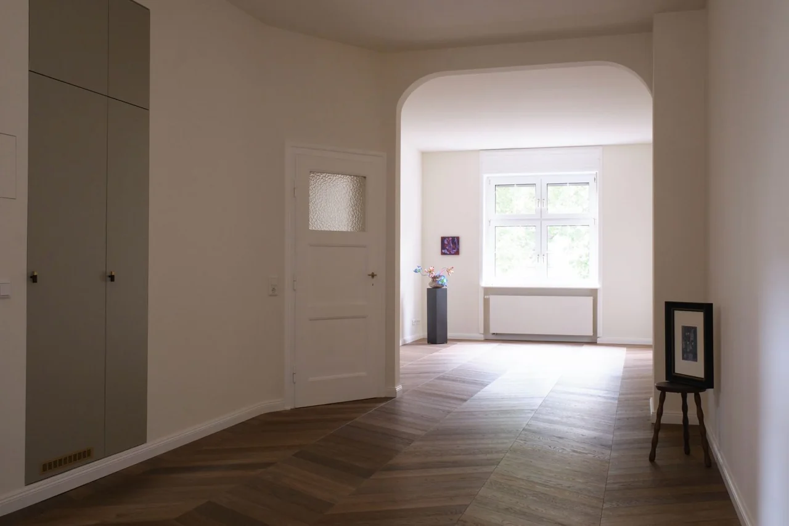
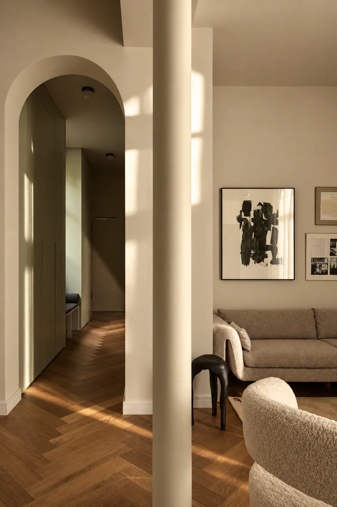
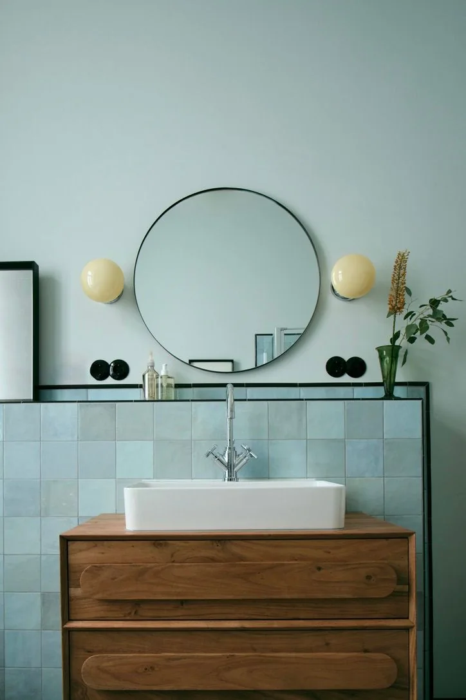
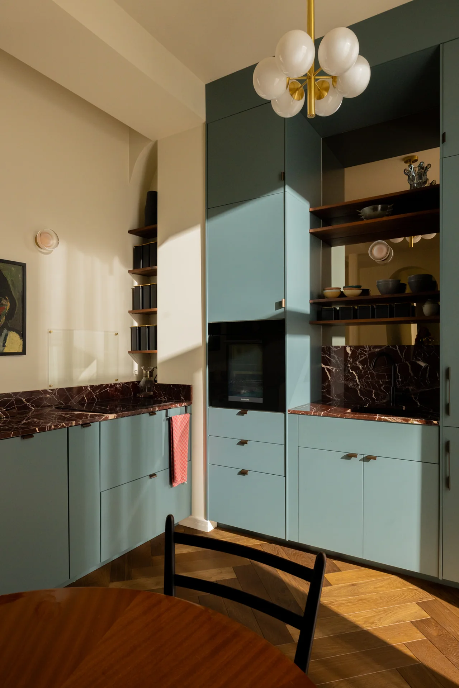

Wohnräume & Übergänge
Helle Flächen, Parkett und offene Durchblicke – ein Einblick in die Wohnungssanierung Hanauer Landstraße.
Diese Vorschau ist nicht öffentlich freigegeben. Bitte Passwort eingeben.
Vom Wohnbereich bis ins Bad: Sanierung verändert, wie sich Räume anfühlen und nutzen lassen. Unsere Projektbilder geben Einblicke in unterschiedliche Wohnwelten.
Sanierungsprojekte ansehen ↗
Raumfolgen, Materialien und Oberflächen prägen das Ergebnis. Diese Auswahl zeigt unterschiedliche Aspekte der bereitgestellten Projekte.

Helle Flächen, Parkett und offene Durchblicke – ein Einblick in die Wohnungssanierung Hanauer Landstraße.

Holz, Keramik und farbige Fliesen im Zusammenspiel. Details aus dem Projekt Fürstenberger.

Farbige Fronten, warme Oberflächen und Blickbeziehungen im Projekt Böttgerstraße.
Sanierung, Innenausbau oder Rechenzentrum: Sprechen wir über Ihr Bauvorhaben.